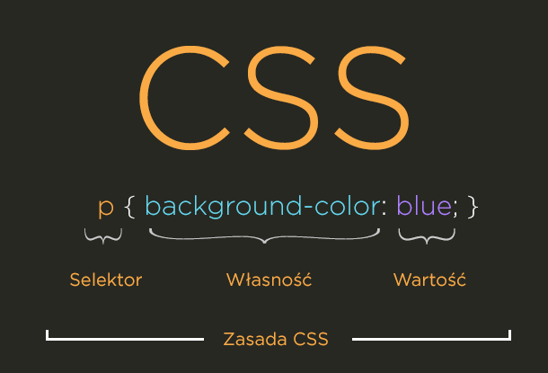

WARSZTATY WEBOWE Mikołaj Szumigalski
Powrót
Zajęcia 5
Link do pobrania prezentacji z zajęć nr 5: Prezentacja 5
Stylowanie strony
Do tej pory dane, które umieszczaliśmy na stronie wyświetlały się w dość "surowy" sposób. Ok, czasem za pomocą atrybutu mogliśmy np. ustalić grubość obramowania tabeli, jednak z całą pewnością to nie jest szczyt naszych marzeń o porządnym wyglądzie strony. Style na stronie dodajemy za pomocą CSS'a. Tylko czym jest CSS?
Najprościej tłumacząc jest to specjalny język, który służy do nadawania pewnych cech znacznikom HTML np. koloru, grubości, wielkości itd. Sam skrót CSS odczytujemy jako "Kaskadowy Arkusz Stylów"
1. Sposoby umieszczania stylów w pliku HTML
Zanim odpowiemy sobie na pytanie dlaczego CSS jest nazywany kaskadowym dowiedzmy się w jaki sposób możemy dołączyć style do naszych plików. Prosty przykład - chcemy wyświetlić tekst "Hello Zoltan!" w kolorze zielonym na czarnym tle.
1.1 Dopisywanie atrybutu style do znacznika
Nadawanie atrybutów to dla nas żadna nowość. Tym razem nadajemy atrybut o nazwie style, któremu musimy nadać styl. Każdy z nich składa się z trzech elementów: selektora(wskazuje na element, który chcemy ostylować), nazwy stylu (własności) i wartości. W naszym przykładzie nadajemy kolor tekstu - color, oraz kolor tła (w tym przypadku naszego div'a) - background color. A wartość jest cechą naszej własności czyli kolory - zielony i czarny. Jak widzimy na przykładzie style i ich wartości są odzielone dwukropkiem, a poszczególne własności oddzielamy średnikiem.
1.2 Znacznik style w głowie strony


Dodawanie do każdego div'a pojedynczego stylu byłoby strasznie uciążliwie przy dużej ich ilości, a kod stałby się nieczytelny. W takiej sytuacji bardzo pomocne może okazać się rozwiązanie ze znacznikiem style. Na samym początku warto zapamiętać, że ten znacznik umieszczamy w głowie(head) strony, a nie w body. Wewnątrz niego stosujemy następującą regułę: najpierw selektor, a potem wewnątrz nawiasów klamrowych podobnie jak w poprzedniej metodzie - selektor, średnik i wartość. To rozwiązanie sprawia, że mamy wszystkie style w jednym miejscu, co ułatwia pracę gdy chcemy np. zmienić design naszej strony, a nie mamy ochoty przeglądać całego pliku html. A co jeśli nie chcemy stylować wszystkich div'ów tak samo? Tutaj pomogą nam poznane ostatnio atrybuty class i id.
Żeby lepiej zrozumieć idee wykorzystane w przykładzie przypomnijmy sobie różnice między class i id. Atrybutu class o konkretnej wartości możemy użyć do kilku obiektów w dokumencie, ale może być tylko jeden atrybut id o danej wartości (czyli może być kilka obiektów o atrybucie id, ale każdy z nich musi mieć inną wartość). Zauważmy w jaki sposób stylujemy elementy za pomocą class i id. W tym wypadku nie zwracamy uwagi na to czy element jest div'em czy innym znacznikiem - tu ma znaczenie tylko wartość atrybutu class lub id, więc nic nie stoi na przeszkodzie, aby nadać taką samą wartość atrybutu class do elementu div i np. span! Nadając styl atrybutowi class musimy jego nazwę poprzedzić kropką, a w przypadku id - #.
1.3 Style w osobnym pliku .css
Pójdźmy jeszcze dalej - nasza strona internetowa może składać się przecież z więcej niż jednego pliku html. A metody, których używaliśmy do tej pory raczej nam nie pozwolą utworzyć uniwersalnych stylów, które mogłyby wykorzystywać wszystkie (bądź część) pliki html. Właśnie m.in. to powoduje, że możemy skorzystać z trzeciej opcji - oddzielny plik z rozszerzeniem .css. Zaletą takiego rozwiązania jest to, że nie musimy uczyć się nowej struktur pliku, ponieważ wszystko wygląda tak jak w poprzedniej metodzie
stylecw.cssNa poniższym przykładzie można zobaczyć efekt wykorzystania naszego pliku stylecw.css, oraz w jaki sposób taki plik dołączamy do pliku html. Tym razem wykorzystujemy znacznik link, który podobnie jak znacznik style umieszczamy w głowie strony. Znacznik ten posiada 2 ważne atrybuty - type, w którym ustalamy typ pliku (znacznik link służy też do linkowania plików innego typu np. pliki javascript), oraz znany nam atrybut href, który zawiera ścieżkę do pliku css.
Kaskadowość
Dlaczego CSS nazywamy kasadowym? Musimy wziąć pod uwagę fakt, że ktoś mógłby chcieć użyć w swojej stronie więcej niż jednej metody dodania stylów np.
Jak widzimy wyświetliła się metoda pierwsza. I właśnie na ustaleniu tej hierarchii polega kaskadowość. Jak ona wygląda?
- 5. Domyślny arkusz przeglądarki WWW (niezależny od autora strony)
- 4. Domyślny arkusz użytkownika przeglądarki (jak wyżej)
- 3. Zewnętrzne arkusze stylów
- 2. Definicje stylów w nagłówku dokumentu
- 1. Definicje stylów w atrybucie style elementu
Czyli pierwszeństwo mają style znajdujące się "bliżej" elementu.
2. Pędzle w dłoń! - kolorujemy stronę
W poprzednich przykładach udało mi się przemycić dwie własności służące do kolorowania naszych elementów - color(do kolorowania tekstu) i background-color(do kolorowania tła). Wartości tych elementów ustaliłem poprzez nadanie im nazw kolorów z j. angielskiego. Jednak to nie jedyna opcja
2.1 Nadanie koloru przez nazwę
Sposób najprostszy, dla osób znających angielski oszczędza czas, jednak bardzo zawęża nam pole do popisu. Choć istnieje 140 nazw kolorów wspieranych przez HTML (możecie je znaleźć tutaj) to jest to tylko kropla w morzu możliwych barw i odcieni.
2.2 Nadawanie kolorów przez RGB
RGB co pewnie tajemnicą nie jest to sposób tworzenia kolorów z 3 podtawowowych - czerwonego (Red), zielonego (Green) i niebieskiego (Blue). Aby ustawić wartość RGB należy napisać kolor w takim formacie rgb(r, g, b) gdzie "r,g,b" to wartości kolorów od 0 do 255 gdzie im wyższa wartośc tym większe nasycenie danym kolorem. Wygodną sprawą w takiej sytuacji jest Kalkulator RGB , który pomoże nam w szybki sposób ustalić nasz kolor.
2.3 Nadawanie kolorów poprzez cyfry szesnatkowe
Tutaj mamy schemat następujący #rgb gdzie r, g, b to cyfry szesnastkowe zapisane przez 2 znaki (16*16 = 256, czyli cały zakres od 0 do 255). Idea taka sama co w poprzednim przykładzie tylko inny sposób. Tutaj również możemy dla ułatwienia korzystać z kalkulatora
2.3 Nadawanie kolorów przez HSL
HSL to skrót od:
Hue (odcień) - przyjmuje wartości od 0 do 360 (0 to czerwony, 120 to zielony, a 240 to niebieski)
Saturation (nasycenie) - przyjmuje wartości procentowe, gdzie 0 to praktycznie kolor szary, a 100 to "pełny" kolor, czyli im mniejsza wartość tym bardziej kolor staje się szary
Lightness (tzw. średnie światło białe) też wartości procentowe. Służy do rozjaśniania lub przyciemniania kolorów ( 0 to czarny, 100 to biały)
W tym przypadku również możemy skorzystać z kalkulatora
2.4 Przezroczystość
Kolena ciekawa możliwość, którą możemy zastosować przy metodzie rgb i hsl. Jeśli do rgb, lub hsl dopiszemy literkę a i dodamy czwarty atrybut (przyjmujący wartości od 0 do 1), wtedy możemy ustawić nasz element na przezroczysty (im większa wartość tym większa przezroczystość - ustawienie na 1 sprawi, że element znika)
3. Ten Comic Sans nawet fajny - jak wybrać dobrą czcionkę/font do naszej strony?
Nieraz spotkałem się z kłótniami, kiedy mówić font, a kiedy czcionka - kiedy pogrzebałem w czeluściach internetu okazało się, że obecnie raczej są to być pojęcia zamienne. Jak dzielmy czcionki?
3.1 Czcionki szeryfowe i nieszeryfowe (serif i sans serif)
Na samym początku zaznaczam, że informacje pochodzą z tej strony którą polecam - ja zahaczam tylko o najbardziej moim zdaniem istotne informacje.
Szeryfy to elementy ozdobne pisma, kreski stosowane w wielu krojach w celu zwiększenia jego dekoracyjności. Jeśli dany font został zaprojektowany z wykorzystaniem szeryfów, to powinny być one konsekwentnie stosowane w całym zestawie znaków pisarskich danego fontu. Jak można się domyślić czcionki nieszeryfowe takich ozdobnych elementów nie posiadają. W artykule nie jest napisane o trzecim rodzaju czcionek - tzw. Monospace, gdzie każda literka ma taką samą szerokość.
3.2 Ustawianie/dodawanie czcionki na stronę
Choć w internecie można znaleźć całe mnóstwo ładnych czcionek pamiętajmy o tym, aby nie różniły się między sobą, a nawet nejlepiej trzymać się jednej. Czcionki szeryfowe są trudnejsze do czytania, więc jeśli nasza strona posiada dużą ilość tekstu - lepiej z takiej zrezygnować. Font ustalamy w stylach za pomocą właściowści font-family

Dlaczego w przykładzie są podane aż 3 fonty? Nie każda przeglądarka i komputer musi obsługiwać wszystkie czcionki. Tu przydaje się wiedza, jakie czcionki są szeryfowe a jakie nie dzięki czemu zostawiamy sobie furtkę dla starszych przeglądarek. Ciężko powiedzieć czy istnieje jakaś czcionka uniwersalna, ale jeśli użyjemy którejś z tych: Arial, Tahoma, Verdana to jest duża szansa, że wyświetli się poprawnie.
Rozwiązaniem dającym wiele możliwości w zakresie czcionek są Google Fonts. Wystarczy wybrać interesującą nam czcionkę a strona sama nam podpowie odpowiedni link do niej, któr umieszczamy w sekcji head strony, a także co umieścić w stylach
3.3 Wielkość czcionki
Wielkość czcionki możemy ustalić za pomocą własności font-size, któremu przypisujemy wartości w pikselach
3.4 Wyrównanie tekstu
Podobnie jak np. w Wordzie możemy nasz tekst np. wyrównać do lewej strony, do prawej, czy wyśrodkować. Służy do tego właściwość text-align przyjmujący wartości: left, right, center i justify (ustalenie odlegołości między wyrazami, tak aby każda linia tekstu miała tą samą wartość)
3.5 Małe / Wielkie litery
Mając gotowy tekst cały czas możemy modyfikować jego wielkość liter za pomocą samych stylów. Służy do tego własność text-transform dzięki której możemy: ustawić wszystkie litery na wielkie (wartośc uppercase), zamienić wszystkie na małe (wartość lowercase), zmienić wszystkie pierwsze litery w każdym wyrazie na wielkie (wartość capitalize)
3.6 Podkreślenia tekstu
Poznaliśmy już znacznik u,który się tym zajmował, ale możemy go zastąpić własnością text-decoration, która daje nam dodatkowo więcej możliwości. Wartości, które przyjmuje:
- none - brak podkreślenia (przydatne, gdy chcemy usunąć np. podkreślenie ze znacznika a !)
- overline - podkreślenie nad tekstem
- underline - podkreślenie pod tekstem
- line-through - przekreślenie tekstu
3.7 Wcięcie tekstu
Tworząc akapity moglibyśmy chcieć, aby każdy z nich zaczynał się wcięciem. Możemy taki efekt uzyskać własnością text-indent, którego wartości podajemy w pikselach (tak jak np. przy wielkości tesktu)
3.8 Cień tesktu
Własność text-shadow , która do tego służy mimo tego, że pozwala na naprawdę ciekawy efekt, raczej nie jest polecana do nadmiernego używania. Niemniej jeśli chcemy wyróżnić jakąś część tekstu warto z czegoś takiego skorzystać.
3.9 Odległość między literami / wyrazami
Do jej ustalenia używa się własności letter-spacing jeśli chcemy ustalić odległość między literami i word-spacing jeśli chcemy ustalić odległośc między wyrazami, które przyjmują wartości w pikselach. Mogą też przyjmować wartości ujemne, które zmniejszą domyślną odległość między wyrazami.
3.10 Białe znaki
Jak już dobrze wiemy używając Entera w naszym pliku html, nie przeniesiemy wyrazu do następnej linii w efekcie finalnym na przeglądarce. Podobnie będzie jeśli użyjemy kilku spacji czy tabulatora. Co ciekawe można to zmienić za pomocą stylów. Wystarczy nam własność white-space,która przyjmuje wartości:
| Wartość/ cecha | Enter | Tab i spacja | Zawijanie tekstu |
|---|---|---|---|
| normal | Nie | Nie | Tak |
| nowrap | Nie | Nie | Nie |
| pre | Tak | Tak | Nie |
| pre-wrap | Tak | Tak | Tak |
| pre-line | Tak | Nie | Tak |
3.11 Własność overflow
Modyfikując wielkość jakiegoś znacznika może się zdażyć, że wprowadzona zawartość będzie wychodzić poza znacznik. Z tym problemem można sobie poradzić za pomocą właśnie własności overflow. Jeśli chcemy ukryć treść wychodzącą poza znacznik ustalamy wartośc na hidden. W przypadku gdy chcemy, aby wyświetlił się specjalny scroll pozwalający na przewijanie treści znacznika używamy wartości scroll (który domyślnie nam stworzy pasek przewijania, nawet jeśli nie jest konieczny), lub auto (który stworzy pasek przewijania tylko wtedy gdy jest potrzebny)
Praca domowa
Do pliku z pracą domową z zajęć nr. 3 proszę dodać ostylowanie. Prosiłbym aby skorzystać ze wszystkich 3 sposobów dodawania styli. Dodatkowo prosze zmienić kolor fragmentu tesktu (+ przezroczystość), dodać jednemu ze znaczników (lub całej stronie kolor tła). Prosze zmienić czcionkę, którą wcześniej proszę zaimprostować z Google Fonts. Wykorzystać modyfikacje tekstu o których pisałem w punktach 3.3-3.10, aby opanować możliwości obrabiania tekstu.
I proszę pamiętać o 2 fazie projektu na następny tydzień!